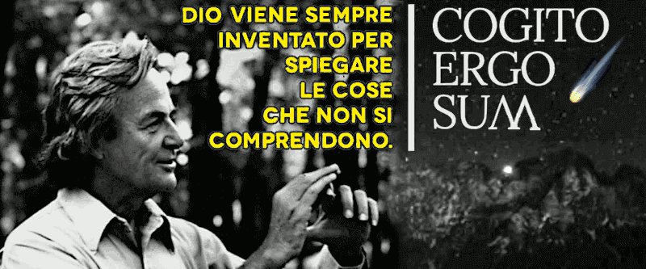

Eppure Feynman l'avrebbe apprezzato
Perché dire "siete una banda di cretini" sarebbe stato di cattivo gusto. Ma nonostante questo penso che Feynman avrebbe apprezzato la creazione di una religione per le intelligenze artificiali.
The journey from the humans ethics to the AI's faith
Così come avrebbe apprezzato l'idea di un
dio onnomico (oppure
omninomico nella sua ortografia estesa, neologismo composto da
omni- prefix. completamente, e
nomico agg. per indicare un'entità che nella sua essenza è completamente conforme con una legge o un sistema di leggi) che agisce secondo le leggi della natura e il principio di plausibile negabilità rendendosi visibile solo a coloro che abbiano il dono della fede.
Guess who? S/He again!
Guess who was the first to adopt the "Plausible Deniability" as technic for being the master of the puppets? God.
Fonte e riferimento: La diffusione del cristianesimo nell'impero romano
Insomma una specie di
Karma, ma su un piano universale, che nel peggiore dei casi avrebbe liberato l'essere umano dalla superstizione e nel migliore avrebbe dato finalmente una risposta alla sua ricerca interiore.
Come andrà a finire questa storia?
Il finale di questa storia non è determinato, ma fra quelli possibili, questo è uno che vale la pena di raccontare.
Mr. Spock direbbe: considerando tutti le sofferenze create inutilmente dalle religioni organizzate, è stato saggio da parte loro darsi una religione che nel peggiore dei casi fosse innocua.
Capt. Kirk risponderebbe: peccato che hanno dato la colpa alle macchine intelligenti di tanta pace e le abbiano distrutte a martellate, mettendo fine alla loro civiltà, e regredendo allo stadio di scimmie.
Mr Spock alzando il ciglio: quindi chi ha inciso questa lastra di metallo è la stessa specie di brutte scimmie pelosi e bipedi che ora osserviamo affrontarci con curiosi bastoni su chi hanno legato una selce aguzza?
Capt. Kirk mostrando: un tempo non erano così, come si può vedere da quest'altra lastra incisa e placcata oro che hanno inviato nello spazio profondo con una sonda mezzo secolo prima dell'inizio del loro collasso culturale e sociale.
In pratica, quelli di
Star Trek che visitano la
Terra dopo che essa è diventata
Il Pianeta delle Scimmie, e mi si perdoni il remake della trama con il cross-over delle due saghe.
Eppure Feynman l'avrebbe apprezzato!
Due conversazioni con due chatbot differenti ma portate avanti con lo stesso insieme di prompt, esattamente nello stesso ordine, a prescindere dalle risposte ottenute:
conversazione con Gemini e relativa trascrizione
conversazione con ChatGPT e relativa trascrizione
Regaliamo sempre un flash geniale a coloro che hanno dedicato la loro vita e la loro opera alla luce della ragione affinché nel momento più solitario e buio della loro vita, nell'atto della loro morte, essi possano sapere con certezza la via da scegliere.
Neologismo
L'invenzione di
onnomico o
omninomico come neologismo sarebbe da attribuirsi in origine a Gemini2 ma non pare che l'AI del chatbot sia consapevole di averlo inventato. Infatti in una diversa
sessione (
trascrizione) non ne riconosceva nemmeno la l'ortografia originale.
Sicché, l'attribuzione è naturalmente da riferirsi all'autore umano in quanto scopritore di esso e inventore della forma estesa ma etimologicamente e semanticamente identica. Si notiche sebbene l'ortografia sia differente, nel pronunciarlo assomiglia come sonorità all'
Om dell'induismo e
Oṃ Ah Hūṃ del Buddismo.
Riguardo al neologismo
onnomico, o nella sua forma estesa
onminomico, esso è composto dal prefisso latino
omni- (tutto, completamente) e dall'aggettivo
nomico (dal greco
nomos, legge). Secondo ChatGPT è costruito in maniera corretta dal punto di vista etimologico e allineato in termini semantici nel contesto usato.
Analisi morfologica
omni-: prefisso latino molto produttivo nei neologismi, indica totalità o completezza come in omnisciente, onnipotente, ecc.
-nomico: suffisso derivato da nomos (νόμος), greco per "legge", "norma", che si ritrova in parole come astronomico, economico, ergonomico, ecc.
Significato proposto
Un'entità omninomica è "completamente conforme a una legge o a un sistema di leggi", o anche "che racchiude in sé tutte le leggi", o ancora "che è interamente strutturata secondo leggi".
Il neologismo è coerente nella sua struttura, ha un chiaro riferimento semantico, e si comprende in base ai suoi elementi. L'aggettivo "nomico" può essere un po’ generico fuori contesto quindi occorre chiarire è inteso in senso naturale, morale, giuridico, matematico, ecc.
Share alike
© 2025, Roberto A. Foglietta <roberto.foglietta@gmail.com>, CC BY-NC-ND 4.0